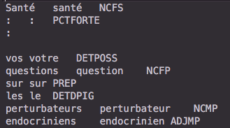
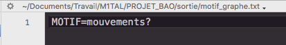

Cette page présente mes scripts d'extractions de rubriques, les patrons morpho-syntaxiques que j'ai choisis pour mon analyse, ainsi que les graphes que j'ai pu créer. Mon travail a suivi ce schéma :

Comme indiqué sur la page d'accueil, j'ai choisi trois rubriques : Europe, International, et Société. Ces rubriques font partie des rubriques les plus générales du journal, et on peut s'attendre à ce que le style journalistique y soit relativement homogène (en comparaison par exemple avec les rubriques d'opinion ou de critique artistique et culturelle).
Tous les scripts sont visibles sur la page elle-même et téléchargeables. Pour naviguer entre les différentes boîtes à outils, vous pouvez utiliser la barre d'onglets ci-dessous.
Boîtes à outils 1 et 2 : création des fichiers

J'ai choisi de regrouper les boîtes à outils 1 et 2 en un seul script qui recueille en même temps les données recherchées dans l'arborescence de fils RSS et les étiquète avec Treetagger (l'étiquetage avec Cordial se fait à la main après avoir converti les fichiers en ISO-8859-1).
 Le programme en perl ci-dessous attend deux arguments : le numéro de la rubrique à traiter dans les fils RSS, et le chemin de l'arborescence contenant ces fils RSS. Il va ensuite
Le programme en perl ci-dessous attend deux arguments : le numéro de la rubrique à traiter dans les fils RSS, et le chemin de l'arborescence contenant ces fils RSS. Il va ensuite
- créer un fichier XML et un fichier TXT qui récupèreront nos données
- parcourir l'arborescence de fils RSS (fonction parcoursarborescencefichiers)
- à chaque fois qu'il trouve un fichier XML correspondant à la rubrique recherchée, il en récupère le titre et le résumé et les nettoie (fonction nettoyage)
- envoyer ces données nettoyées directement dans le fichier TXT (qui sera étiqueté par Cordial en dehors du programme)
- faire étiqueter ces mêmes données par TreeTagger et renvoie ce résultat dans le fichier XML (fonction etiquetage)
 Les fichiers que j'ai obtenus après avoir fait fonctionner ce programme pour chacune de mes rubriques et traité mes fichiers TXT avec le logiciel Cordial sont disponibles ici : ARCHIVE POUR LES RUBRIQUES 3210-3214-3224.
Les fichiers que j'ai obtenus après avoir fait fonctionner ce programme pour chacune de mes rubriques et traité mes fichiers TXT avec le logiciel Cordial sont disponibles ici : ARCHIVE POUR LES RUBRIQUES 3210-3214-3224.
Les fichiers XML étiquetés par TreeTagger se présentent ainsi :

Les fichier TXT étiquetés par Cordial se présentent ainsi :
On voit bien qu'il va falloir traiter ces fichiers de façon différente pour pouvoir extraire des patrons. Ce travail est l'objet de la BAO 3.
Boîte à outils 3 : recherche des patrons

Cette boîte à outils a pour but de développer différentes méthodes d'extraction de patrons dans les fichiers obtenus précédemment. Cela nous permettra d'obtenir des résultats comparables pour Treetagger et Cordial, et d'expérimenter avec différents outils de traitement textuel. On abordera, dans l'ordre :
- le traitement du fichier étiqueté par Cordial via Perl
- le traitement du fichier étiqueté par Treetagger via Perl
- le traitement du fichier étiqueté par Treetagger via XSLT
- le traitement du fichier étiqueté par Treetagger via XQuery
J'ai choisi les patrons que je souhaitais extraire en fonction des graphes que je souhaitais produire et des différences que je voulais observer entre Cordial et Treetagger. J'ai notamment extrait plusieurs patrons autour du modèle "déterminant-nom commun-nom propre" car je savais que je voulais essayer d'illustrer sous forme de graphes les formations linguistiques du type "l'affaire Fillon". J'ai également choisi un patron avec des verbes (à l'infinitif) pour pouvoir aussi analyser leur utilisation. La liste des patrons utilisés et des résultats obtenus est disponible en fin de BAO.
CORDIAL ET PERL
En inspectant le fichier étiqueté par Cordial, on se rend déjà compte que Cordial est un étiqueteur extrêmement fin (ce qui s'explique en partie par le fait qu'il s'agit d'un correcteur orthographique du français) : les noms communs, par exemple, sont étiquetés en fonction de leur genre et de leur nombre. J'ai donc choisi d'exploiter cette finesse d'analyse pour faire des distinctions dans les patrons que Treetagger n'autorise pas. J'ai choisi d'essayer d'utiliser une méthode différente de celles vues lors du cours pour le travail en Perl.
Le programme en perl ci-dessous attend trois arguments : le fichier txt traité par Cordial (converti en UTF-8), un fichier de patrons (sous forme d'expressions régulières) à extraire dans le fichier, et le numéro de la rubrique (pour nommer les fichiers). Il va ensuite
- transformer le fichier txt en deux listes, l'une contenant tous les termes (c'est-à-dire la première colonne du fichier) et l'autre contenant toutes les étiquettes (la troisième colonne du fichier). La deuxième colonne du fichier (les lemmes) ne nous intéresse pas et sera ignorée
- pour chaque patron présent dans la liste de patrons :
- transformer le patron en une liste d'étiquettes
- trouver une ligne où l'étiquette de la liste correspond à la première étiquette du patron, puis vérifier si la ligne suivante correspond à l'étiquette suivante, jusqu'à ce que le patron soit complété
- envoyer tous les patrons morpho-syntaxiques complets dans un fichier txt
Format du fichier de patrons :
| DETD[A-Z]{1,4}#NC[A-Z]{1,3}#NP[A-Z]{1,2} |
| DETD[A-Z]{1,4}#NC[A-Z]{1,3}#DETD[A-Z]{1,4}#NP[A-Z]{1,2} |
| ADV#V[A-Z]{1,6}#ADV |
| DETD[A-Z]{1,4}#NC[A-Z]{1,3}#ADJ[A-Z]{1,4} |
| DETD[A-Z]{1,4}#NCF[A-Z]{1,2}#ADJ[A-Z]{1,4} |
| DETD[A-Z]{1,4}#NCM[A-Z]{1,2}#ADJ[A-Z]{1,4} |
| DETD[A-Z]{1,4}#ADJ[A-Z]{1,4}#NC[A-Z]{1,3} |
| DETD[A-Z]{1,4}#ADJ[A-Z]{1,4}#NCF[A-Z]{1,2} |
| DETD[A-Z]{1,4}#ADJ[A-Z]{1,4}#NCM[A-Z]{1,2} |
| NC[A-Z]{1,3}#ADJ[A-Z]{1,4} |
| ADJ[A-Z]{1,4}#NC[A-Z]{1,3} |
| NC[A-Z]{1,3}#PREP#NC[A-Z]{1,3} |
| PREP#NP[A-Z]{1,2} |
| VINF#DETD[A-Z]{1,4}#NC[A-Z]{1,3} |
| VINF#DETD[A-Z]{1,4}#NC[A-Z]{1,3}#ADJ[A-Z]{1,4} |
TREETAGGER ET PERL
Après avoir obtenu des données exploitables avec Cordial et Perl, on peut passer aux fichiers XML étiquetés par Treetagger. La méthode Perl utilisée pour Treetagger est globalement similaire à celle que j'utilise pour Cordial ; l'extraction du patron est simplement différente car le format des lignes du fichier est différent. Les patrons extraits sont moins nombreux car Treetagger utilise moins d'étiquettes que Cordial.
Le programme en perl ci-dessous attend trois arguments : le fichier XML contenant les étiquettes Treetagger, un fichier de patrons (sous forme d'expressions régulières) à extraire dans le fichier, et le numéro de la rubrique (pour nommer les fichiers). Son fonctionnement est presque identique au programme traitant la sortie Cordial, à l'exception de l'extraction des termes et des étiquettes, qui se fait directement dans le fichier XML. Le format des patrons est également différent car Treetagger n'utilise pas les mêmes étiquettes que Cordial.
Format du fichier de patrons :
| DET:ART#NOM#NAM |
| DET:ART#NOM#DET:ART#NAM |
| ADV#VER:[a-z]{1,5}#ADV |
| DET:[A-Z]{1,3}#NOM#ADJ |
| DET:[A-Z]{1,3}#ADJ#NOM |
| NOM#ADJ |
| ADJ#NOM |
| NOM#PREP#NOM |
| PREP#NAM |
| VER:infi#DET:ART#NOM |
| VER:infi#DET:ART#NOM#ADJ |
TREETAGGER ET XSLT
Une autre méthode que l'on peut utiliser pour afficher des informations au format XML est une feuille de style XSL. Les feuilles de styles XSL permettent de formater et d'afficher des données XML dans un format HTML : l'enjeu est donc ici de produire une page HTMl facilement lisible à l'oeil nu. Les pages HTML créées sont disponibles en fin de BAO, et dans l'exercice 12 du projet de XML effectué dans le cadre du master.
Les trois feuilles de style XSL ci-dessous sélectionnent les éléments correspondant à un patron dans les fichiers XML et les affichent sous forme de tableau. Ce travail a seulement été effectué sur quelques patrons car il prend un certain temps et n'est pas essentiel dans le cadre du projet. Ce travail a été réalisé en utilisant le logiciel Oxygen.
Patrons extraits, dans l'ordre (rubrique 3214) :
| NOM ADJ |
| DET:ART NOM NAM |
| VER:infi DET:ART NOM ADJ |
TREETAGGER ET XQUERY
Les requêtes XQuery ci-dessous sont encore une autre méthode d'obtention de patrons. Xquery est le langage de requêtes associé à XML : chaque requête ci-dessous navigue dans l'arborescence du fichier XML et extrait les éléments définis.
Ces requêtes ne sont pas téléchargeables en raison de leur brièveté et du fait que les patrons extraits ici proviennent du projet de XML et ne sont pas forcément pertinents à notre recherche.
Patrons extraits, dans l'ordre :
| NOM PREP NOM |
| NOM ADJ |
Vous pouvez accéder via le tableau suivant aux résultats utilisés pour l'analyse, au format TXT et HTML. Ils sont classés par motif, puis par étiqueteur afin de pouvoir comparer les résultats plus facilement. Vous pouvez également télécharger une archive contenant tous les résultats obtenus.
| Motifs | Rubrique 3210 (International) | Rubrique 3214 (Europe) | Rubrique 3224 (Société) | |
|---|---|---|---|---|
| DETERMINANT - NOM COMMUN - NOM PROPRE | Cordial | TXT | TXT | TXT |
| Treetagger | TXT | TXT, HTML | TXT | |
| DETERMINANT - NOM COMMUN - DETERMINANT - NOM PROPRE | Cordial | TXT | TXT | TXT |
| Treetagger | TXT | TXT | TXT | |
| DETERMINANT - NOM - ADJECTIF | Cordial | TXT (féminin), TXT (masculin), TXT (tous) | TXT (féminin), TXT (masculin), TXT (tous) | TXT (féminin), TXT (masculin), TXT (tous) |
| Treetagger | TXT | TXT | TXT | DETERMINANT - ADJECTIF - NOM | Cordial | TXT (féminin), TXT (masculin), TXT (tous) | TXT (féminin), TXT (masculin), TXT (tous) | TXT (féminin), TXT (masculin), TXT (tous) |
| Treetagger | TXT | TXT | TXT | NOM - ADJECTIF | Cordial | TXT | TXT | TXT |
| Treetagger | TXT | TXT, HTML | TXT | VERBE (INFINITIF) - DETERMINANT - NOM | Cordial | TXT | TXT | TXT |
| Treetagger | TXT | TXT | TXT | VERBE (INFINITIF) - DETERMINANT - NOM - ADJECTIF | Cordial | TXT | TXT | TXT |
| Treetagger | TXT | TXT, HTML | TXT | |
On a donc obtenu nos fichiers, après avoir testé plusieurs méthodes d'extraction. Ici, celle qui est la plus adaptée à nos besoins est celle du script perl : il permet de traiter un grand nombre de patrons rapidement, et bien qu'il ne permette pas de raffiner la présentation des données comme XSLT, ceci n'est pas un problème ici puisque la BAO4 constituera justement le travail de mise en forme de ces données.
Boîte à outils 4 : création de graphes

Maintenant qu'on a récupéré nos données, on peut essayer de les interpréter avec des graphes. On effectue ce travail avec un programme dédié récupéré en cours, qui s'utilise sur Mac sous ce format :
Le fichier de motif doit se présenter de cette façon :
Ici on doit se demander : que cherche-t-on à analyser avec ces données ? Je voulais trouver des exemples de différence d'analyse syntaxique entre Cordial et Treetagger, mais également choisir des motifs qui apporteraient des informations sur les rubriques choisies. Cette analyse n'est bien sûr pas exhaustive, et une présentation visuelle permet également d'influencer la perception des résultats, mais on peut quand même percevoir des indices qui pourraient aider à la formation d'une analyse plus complexe. Une explication plus détaillée des choix que nous avons effectués ensemble au cours de notre recherche en disponible dans la page de synthèse.
Vous pouvez cliquer sur les graphes ci-dessous pour les élargir. Il est également possible de télécharger une archive contenant tous les graphes obtenus pour une lecture plus aisée.
THÈME 1 : affaires et scandales
Une des formations linguistiques que je souhaitais analyser dans mes rubriques est les groupes nominaux de type "déterminant-nom commun-nom propre" qui font référence à des scandales ou des affaires connues dans l'opinion publique. Je m'attendais notamment à retrouver un grand nombre de termes autour des affaires Fillon et Weinstein, mais j'ai été surprise de retrouver certaines formations.
J'ai choisi une expression régulière qui recherche les patrons contenant les termes "scandale", "affaire" et "cas", ainsi que les termes terminant par -gate (ex. Watergate). J'ai effectué cette recherche dans mes trois rubriques, sur les résultats étiquetés par Cordial et Treetagger.
On constate directement une grosse différence entre Cordial et Treetagger : Treetagger ne considère pas le l apostrophe comme un article. Tous les termes du type "l'affaire" sont donc ignorés dans notre patron. En règle générale, Treetagger est effectivement moins précis et surtout moins adapté aux spécificités du français que Cordial : cela s'explique par le fait que Cordial est un correcteur orthographique du français, alors que Treetagger est un outil beaucoup plus général qui bénéficie simplement d'une adaptation francophone.


Dans la rubrique "International", on retrouve, sans grande surprise, des évènements d'envergure internationale : "l'affaire Weinstein" est le motif revenant le plus souvent. On retrouve également les Panama papers, à la révélation desquels la rédaction du Monde a participé.

La rubrique "Europe" est en partie imbriquée dans la rubrique International dans l'organisation du journal, et une partie des articles trouvés dans cette dernière apparaissent dans les deux rubriques. On note cependant que les noms mentionnés ici ont une résonance plus européenne : l'affaire Tariq Ramadan qui a touché principalement la France et le Royaume-Uni, et les affaires Gürtel et Puidgemont qui se déroulent en Espagne et en Catalogne.


La rubrique "Société" est une rubrique assez large qui a tendance à reprendre les évènements à la une sous un angle différent. On notera l'ensemble des termes liés à l'affaire Fillon (qui est devenue "les affaires Fillon" et "l'affaire Penelope Fillon") ; cependant, ce motif a été analysé plus en détail par Margaux dans la rubrique "Politique".
On note que les évènements discutés ici ont principalement une portée française, à l'exception de l'affaire Weinstein, qui revient le plus souvent, et bien plus souvent que dans les rubriques généralistes vues plus haut. Le reste des termes concerne en partie des évènements politiques (Fillon, Cahuzac...), mais on note qu'un grand nombre des affaires mentionnées dans la rubrique "Société" sont, au sens large, des "faits divers" : des évènements ayant choqué l'opinion et souvent lancé des débats de société. Les meilleurs exemples ici sont probablement les affaires Grégory et Maëlys, l'affaire Jacqueline Sauvage et l'affaire Théo, dont le déroulement avait alimenté des débats sur, respectivement, les erreurs judiciaires, les violences domestiques et les violences policières.
Que l'affaire Weinstein soit omniprésente dans ce graphe révèle l'angle choisi par le Monde pour la traiter : un sujet de société qui alimenta ensuite un mouvement de protestation et un débat sur la notion de harcèlement sexuel. On se souviendra que c'est le Monde qui a publié en janvier 2018 (dans la rubrique "Idées" et non "Société") la tribune controversée d'une centaine de femmes sur la "liberté d'importuner" dans le cadre du mouvement #metoo.
THÈME 2 : l'Union européenne
Une conséquence d'avoir travaillé sur la rubrique "Europe" est que j'ai pu observer même à l'œil nu l'influence du Brexit dans les rubriques. D'une façon générale, l'Union européenne, son statut, ses lois et ses membres ont occupé une forte place dans l'opinion en 2017 : conséquence du Brexit mais également des élections présidentielles. J'ai choisi de travailler sur le patron "verbe à l'infinitif-déterminant-nom-adjectif" et de chercher les occurrences de l'adjectif "européen", pour voir quelles actions étaient associées à l'Union européenne. Encore une fois, la forte différence entre les deux étiquetages est due au fait que Treetagger n'a reconnu aucune occurrence contenant des l apostrophes.

On retrouve plusieurs influences dans ces résultats qui sont déjà assez conséquents :
- des termes liés au Brexit : "quitter l'Union européenne", "respecter les traités européens", "rassurer les ressortissants européens"...
- une contre-réaction à la sortie de Royaume-Uni de l'UE, qui a engendré force débats pendant la campagne présidentielle. On retrouve des termes tels que "l'édifice", "le projet", "l'identité", "l'idée", "la coopération", "la dynamique" et "l'idéal" européens, qui doivent être sauvés, consolidés, reconstruits, renforcés, préservés...Ce lexique est de loin le plus présent dans le graphe.
- enfin, on retrouve aussi des termes plus pragmatiques et économiques dans le graphe, comme "croissance", "financements" et "partenariats"
THÈME 3 : mouvements et mouvances
Le dernier motif que j'ai choisi a été l'occasion d'explorer les patrons de type "nom-adjectif". J'ai choisi de chercher le motif "mouvement" dans les rubriques "International" et "Société" car peu d'interférences de sens me semblaient probables (telles que l'emploi du terme "mouvement" au sens littéral). Je souhaitais notamment voir s'il était possible de voir si les adjectifs qui accompagnaient le terme étaient péjoratifs ou mélioratifs.
On notera ici que Cordial et Treetagger sont pour une fois à égalité en termes d'occurrences trouvées. Treetagger a même détecté une occurrence pertinente, "metoo", que Cordial a ignorée. D'une façon générale, j'ai eu l'impression en travaillant sur ce corpus que, Cordial étant un correcteur orthographique (par ailleurs assez daté), il est parfois normatif au point d'ignorer les occurrences qui ne correspondent pas à du français "traditionnel".
Ici, aucun des étiqueteurs n'a "raison" (Treetagger identifie un adjectif et Cordial un nom), mais la solution proposée par Treetagger me semble être la meilleure ici (un nom est plus souvent suivi d'un adjectif que d'un autre nom en français, et "#metoo" qualifie le terme "mouvement" : il est souvent employé avec d'autres adjectifs, comme "le mouvement féministe #metoo"). En m'intéressant au fonctionnement de Treetagger, j'ai pu apprendre que ce dernier utilise des arbres de décision pour effectuer ses étiquetages, et le cas donné ici me semble être un bon exemple de ce fonctionnement. Il est beaucoup plus difficile de trouver des informations sur le logiciel Cordial car il n'est pas libre ; je n'ai donc pas pu comparer les deux logiciels sous cet angle-ci.
On notera également dans les graphes eux-mêmes qu'à l'exception de l'adjectif "antiraciste" (et à la rigueur "pacifiste"), les adjectifs associés à "mouvement" dans la rubrique "International" sont fortement politisés.


La rubrique "Société" nous offre une image légèrement différente : les termes employés sont liés aux questions et dynamiques sociales (on note l'apparition du terme "féministe" et le retour de "metoo") et certains adjectifs qualifient les mouvements : "inédit", "spontané"... Une différence de registre et de thème qui nous renseigne sur les priorités des articles de la rubrique.
Synthèse
J'ai abordé ce projet sous l'angle d'un travail de comparaisons entre différents outils et j'ai essayé de centrer mon analyse des outils linguistiques autour de cette question. Cependant, pour mon travail sur les graphes, j'ai préféré choisir des hypothèses de départ (ex.une rubrique telle que "Société" traitera de nombre de faits et scandales choquants) et essayer de les confirmer ou de les infirmer via les graphes. Un outil visuel comme celui-ci est une arme à double tranchant car si elle peut fortement faciliter la lecture de données elle l'influence aussi énormément par sa présentation, en renforçant nos biais de confirmation. C'est une difficulté que j'ai fait mon possible pour contrer.
Si je devais approfondir mon analyse, je choisirai probablement un des thèmes que j'ai abordés et centrerais tous mes patrons autour de ce dernier pour pouvoir obtenir son environnement linguistique complet. Cependant, je suis satisfaite d'avoir aussi pu effectuer des comparaisons entre différents rubriques et thèmes.
J'aurais aussi souhaité pouvoir poursuivre ma comparaison de Treetagger et Cordial, notamment en comparant leurs fichiers étiquetés pour pouvoir classer les différences trouvées.
Je vous invite également à lire la synthèse générale du projet.